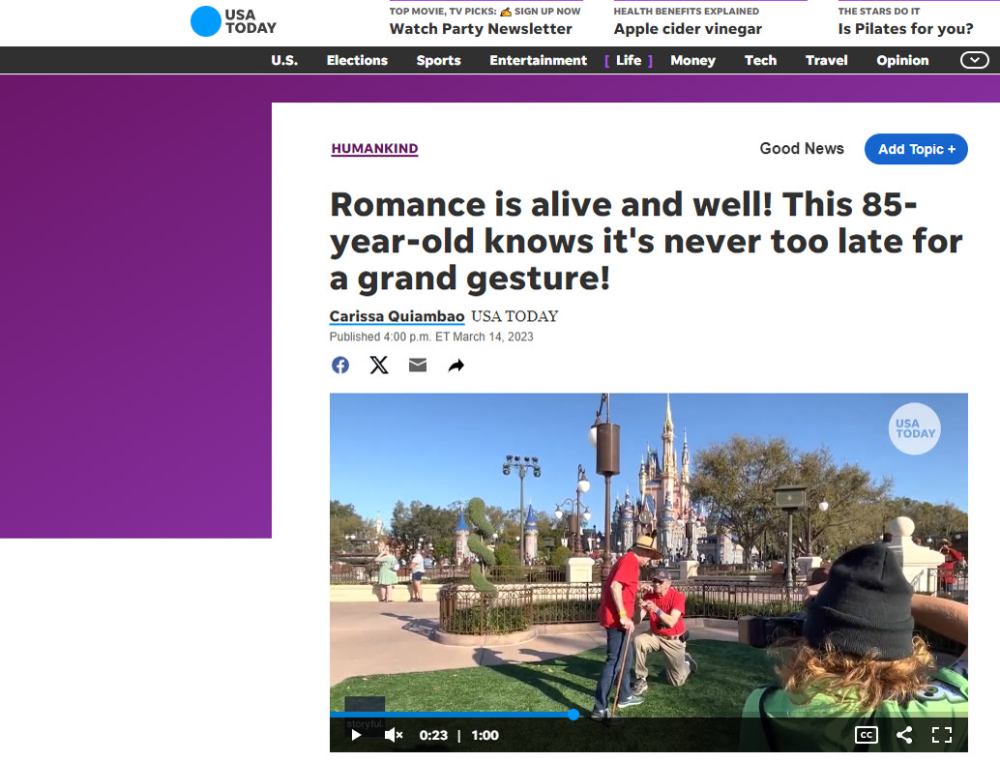
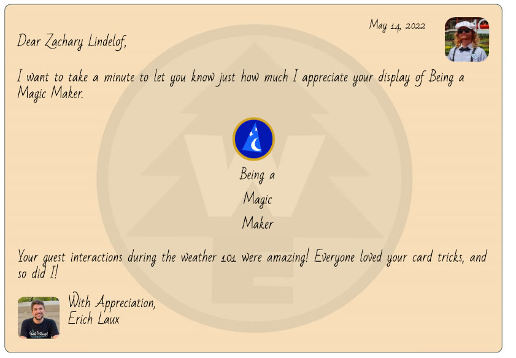

The job is the guest’s memory.
PhotoPass is not a side note on a tile. It is the day job: private sessions, a castle, and a viral proposal that USA Today and ABC7 Chicago picked up.
Zachary Lindelof has been a Walt Disney World PhotoPass photographer since November 2021. The first year was the Disney College Program. Since October 2022 he has been a full-time cast member. Specialties include Capture Your Moment, support training, and castle training, with a short stint relief coordinating at Magic Kingdom.
One Capture Your Moment session went viral on USA Today, ABC7 Chicago, and more. He has photographed more than 500 private sessions. The work is volume and occasion at the same time: proposals, birthdays, and the ordinary Tuesday that a family still wants framed.



On the record
- Nov 2021 – Oct 2022Disney College Program, PhotoPass.
- Oct 2022 – presentFull-time cast member. Capture Your Moment, support and castle trained.
- 500+ sessionsPrivate celebrations. One of them became a national story.
- Cast complimentsGuests and cast leave notes. A handful are on the current site. The rest: email him.



Legal disclaimer: All Disney trademarks are owned by The Walt Disney Company and its affiliated companies. This site is not affiliated with them. The work described is Zachary Lindelof’s own experience and is not a qualification or representation of Walt Disney World or Disney PhotoPass. Content was obtained with permission and/or in line with social media company policy.
Also in the book
The Underreported won a 2018 Telly and aired on News and Guts. Vivid Nightmare is a music video for Black Apple. Save the Day and Death and Taxes are screenplays, readable on the current site. The résumé was updated 1.10.2026.